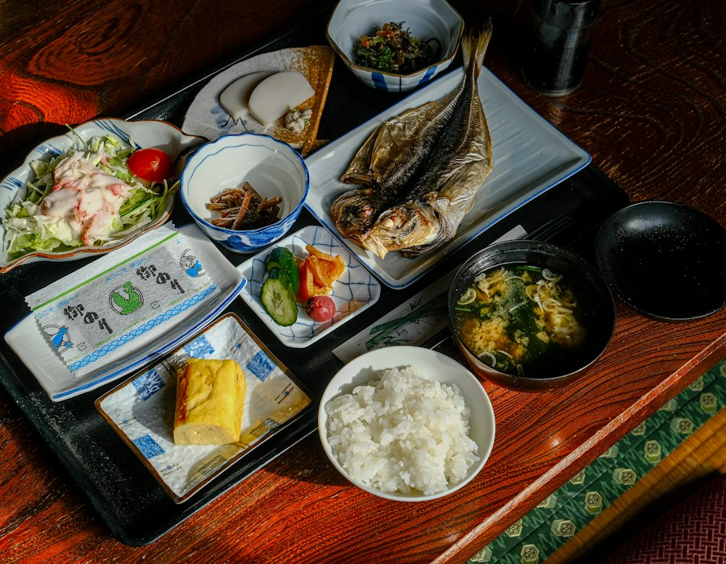

知らない人を、
いきなり家に
呼ばなくていい。
まず会って、
味を知って、
それから。
出店日に会って、料理を味わう。
「この人なら」と思えたら、毎週の作り置きを。

これから、瀬田と旧大津公会堂で月2回の出店を予定しています（写真はイメージです）
いろんな店、いろんな味。
新しいレストランも、昔ながらの喫茶店も。
きれいに揃っていることより、「この人の料理が好き」と思えること。

町の食堂の定食丁寧に仕立てた一皿も、昔ながらのナポリタンも、飾らない家庭料理も。
その人が大切にしてきた味なら、同じ場所に並べます。
月2回、
会える日をつくります。
写真だけで決めずに、会ってから。


会ってみたい人を探す
気になる人や味から、ゆっくり見てください。
会う。味を知る。
それから、お願いする。
店で試す
「この人の料理、好きかな？」
家でも試す
「家でも、合うかな？」
家に呼ぶ前に、家でも試せます。
5品を持ち帰り、いつもの食卓で味を確かめます。
毎週、来てもらう
「この人に、続けてお願いしたい」
同じ料理人が、
週1回か隔週で。
3時間で7〜10品。冷蔵庫に、いつも数日分のおかずがある暮らしに。まずは1回だけでも頼めます。
料金は、先にわかります。
届く作り置きでは、
できないことを。
うちのシェフは、あなたの家の台所でつくります。だから、家族の顔ぶれや、冷蔵庫の中身に合わせられます。
定期便のしくみ
- 同じ料理人が、同じ曜日に。週1回か隔週を選べます。
- 献立は、前回の感想から。「あれはもう少し甘く」「これはまた食べたい」を次に生かします。
- 支払いは1回ずつ。まとめ払いや入会金はありません。毎回、事前にカードで決済します。
- 休むのも、やめるのも自由。次回の3日前までに連絡すれば、費用はかかりません。
離れて暮らす親の家にも
予約と支払いはご家族が。料理人は、大津に住む親御さんの家でつくります。毎週同じ人が来るので、親御さんの様子も、来るたびに伝わります。
親御さんにも、出店日に一度会っていただくか、初回にご家族が立ち会ってください。
病気の治療のために医師から食事の指示がある場合は、その内容を予約前にお知らせください。うちのシェフでできるのは、指示の範囲での味つけや量の調整までです。治療のための食事の設計はしていません。
一度会っている人だから、
頼みやすい。
家に来るのは、先に会った料理人本人です。
頼む前に、気になること。
家には誰が来ますか？
店頭であなたが会って選んだ料理人本人です。自宅に伺えるのは、運営の実技確認・衛生チェック・訪問研修を終え、賠償責任保険への加入を確認した「出張認定」の料理人だけです。
食材はどうなりますか？
食材の準備方法（料理人が購入するか、ご自宅で用意するか）は、予約時に料理人ごとにご案内します。保存容器（約10個）・基本の調味料・調理道具は、ご自宅のものを使います。
交通費はいくらですか？
うちのシェフ共通ルールで、料理人の拠点から5kmまで500円・10kmまで1,000円・15kmまで1,500円です。15kmを超える場合は個別にご相談ください。駐車場代は実費です。料金の欄にご住所を入れると、目安をすぐ確認できます。
子ども向けの味つけにできますか？
ご相談時にお子さまの年齢や好みをお知らせください。子ども向けを得意とする料理人もいます。アレルギーがある場合は必ずお知らせください。対応できるかは料理人ごとに確認してご案内します。
キャンセル料はかかりますか？
自宅出張は3日前まで無料です。2日前30%・前日50%・当日100%。食材の購入後は食材の実費をいただくことがあります。料理人の都合で中止になった場合は全額返金します。
支払いはいつですか？
日程と金額が決まったら、運営からお送りするリンクからカードで事前にお支払いいただき、その時点で予約確定です。料金は料理人に代わって運営（BRIDGE CYCLE株式会社）がお預かりします。キャンセル規定に沿って返金する場合も、同じカードに返金します。
定期便は、いつでもやめられますか？
いつでも休止・解約できます。次回の3日前までにご連絡いただければ、費用はかかりません。支払いは1回ずつなので、まとめ払いの返金もありません。料理人を替えたいときも、運営にご相談ください。
離れて暮らす親の家に来てもらえますか？
できます。予約と支払いはご家族が行い、料理人は親御さんの家でつくります。安心のため、親御さんにも出店日に一度会っていただくか、初回はご家族が立ち会ってください。
どこまで来てもらえますか？
大津市瀬田・石山・膳所・浜大津、草津市南草津周辺を中心に対応しています。それ以外の地域もご相談ください。